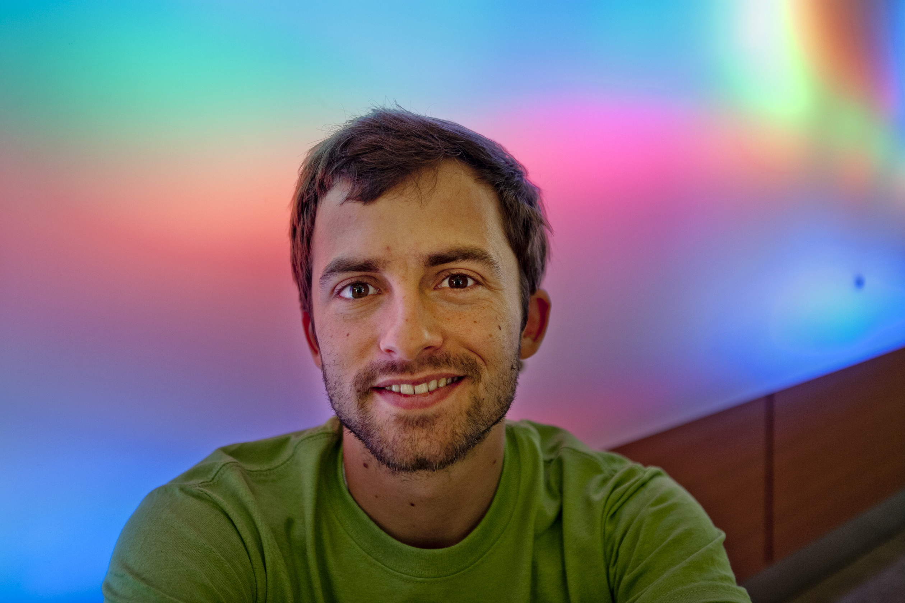

Physics Department
1150 University Ave
Madison, WI 53706
My current research is focused on the characterization of instabilities in a magnetically confined plasma, and the turbulence that arises as a result. In particular, my work is concerned with the reversed field pinch, a magnetic confinement fusion concept device.
More information about my research can be found here.
I work under my advisor Paul Terry.

Photo Credit: Ting-Li Wang